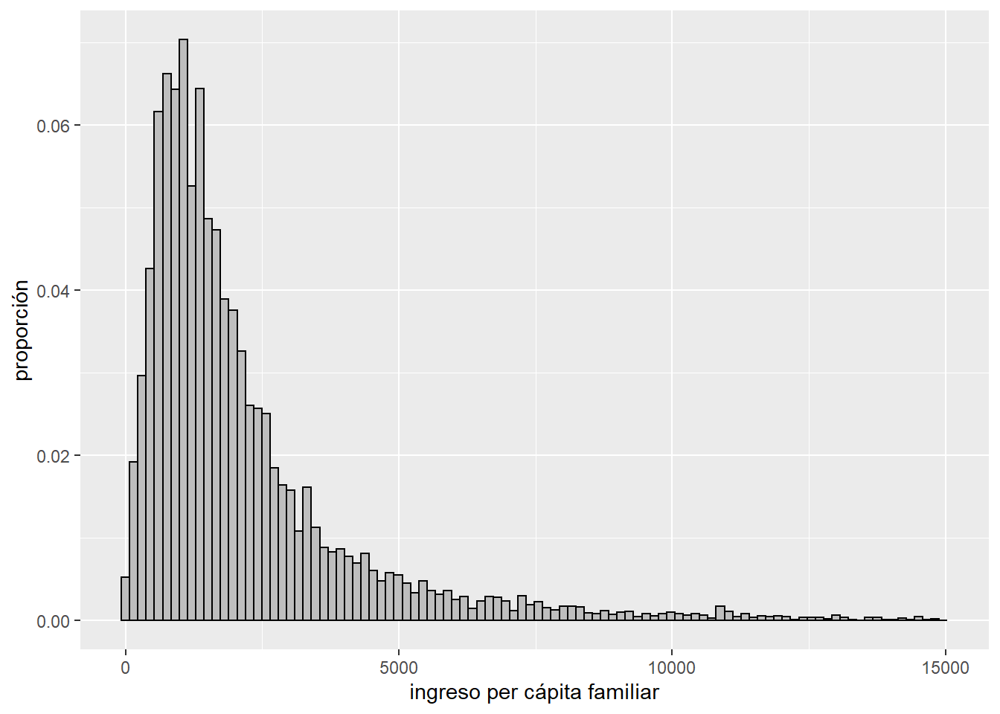
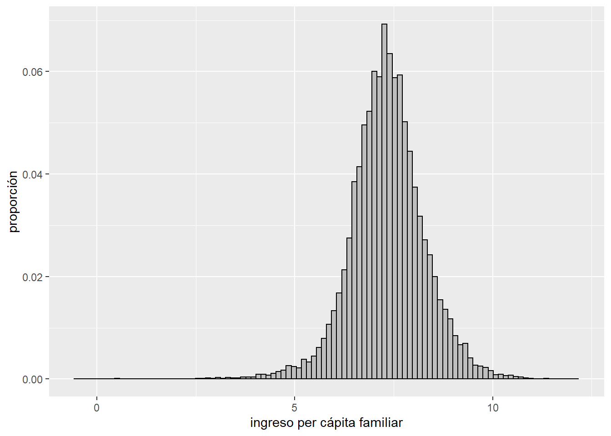
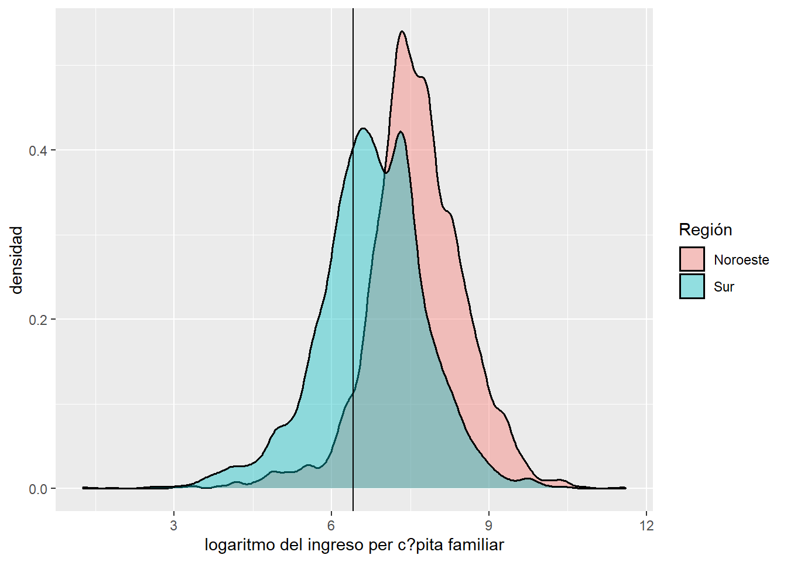
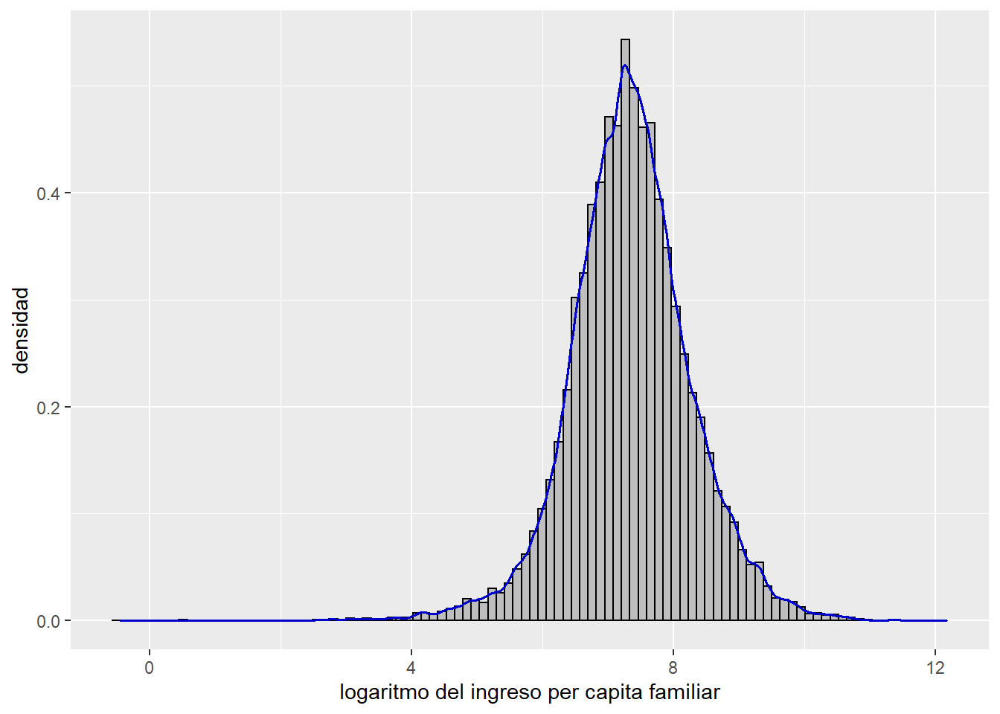
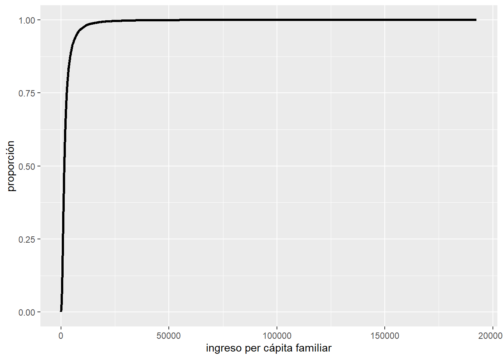
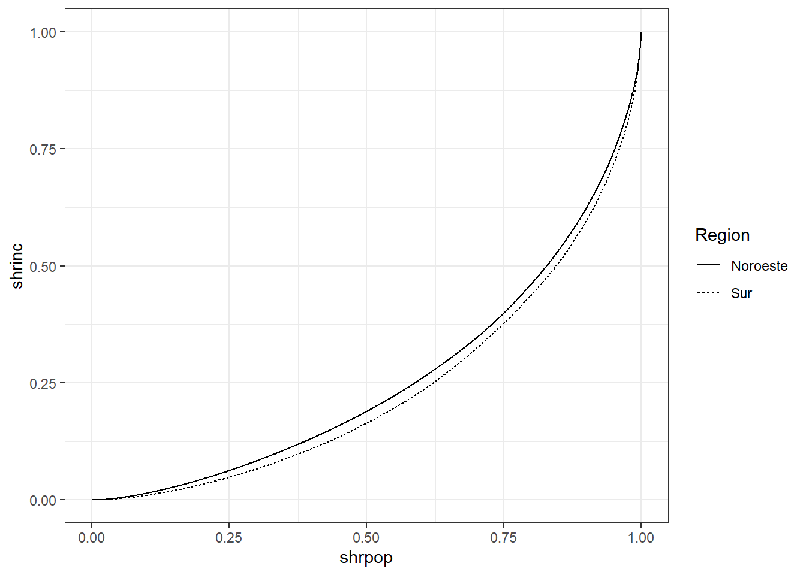

2 Capítulo 2
Herramientas para el análisis distributivo
Last Update: 02/7/2021
Códigos escritos en base a los apéndices del libro “Pobreza y Desigualdad en América Latina” de Gasparini, Cicowiez y Sosa Escudero. El objeto de este material es reproducir la rutina de códigos para STATA presentada en el libro al lenguaje R. Este material es solo de caracter complementario a las explicaciones y detalles conceptuales que se presentan en el libro de texto y los apéndices
Set Inicial
Cargo las librerias, limpio environment, defino el path y atajo para función paste
library(dplyr)
library(tidyverse) # Data wrangling
library(tidygraph)
library(readxl)
library(ggplot2)
library(foreign)
library(Hmisc)
rm(list=ls()) #empiezo limpiando todo
"%+%" <- function(x,y) paste(x,y,sep = "") # defino un shorcut parar concat de texto
data_dir <- "C:/Users/HP/Desktop/CEDLAS - UNLP/Apendices en R/Material libro/encuestas-cedlas/Encuestas/" #seteo directorio
2.1 Introducción: ejemplo Brasil
###- (pág. 72)
El siguiente código es introductorio y busca guiar al lector en la sintaxis básica a utilizar, mostrando a modo de ejemplo cómo replicar los resultados correspondientes al cuadro 2.1 del texto.
Como será al inicio de cada capítulo, el primer paso es obtener base de datos, en ese caso la versión procesada de la PNAD (Pesquisa Nacional por Amostra de Domicílios) de Brasil para el año 2007, accesible desde el link de descarga indicado en la sección anterior: datos y set up básico. (Añadir sección y referir allí)
Una vez descargada la encuesta y guardada en el directorio que el lector indicó al definir el objeto “data_dir” se carga la encuesta que se encuentra en formato STATA con la librería foreing. Dentro de ella el comando read.dta() permite importar en R bases de datos que están en formatos compatibles con otros programas o lenguajes. Las encuestas de hogares procesadas que se utilizan a lo largo del libro solo deben contener observaciones que denominamos coherentes, que en pocas palabras se trata de observaciones válidas que utilizamos en el cálculo de los ingresos familiares. Por ello siempre que se cargue una base luego se debe filtrarla a partir de la columna cohh, para quedarse solo con estas observaciones.
Las encuestas de hogares, al igual que cualquier otra base de datos, se organizan en R como objetos tipo tabla que reciben el nombre de dataframe, donde las filas representan observaciones o registros y las columnas variables o campos. Con el comando head() podemos explorar las primeras observaciones de la encuesta. La expresión [,1:9] indica incluir solo de la columna 1 a 9 para que el output no sea demasiado extenso.
#cargo base
bra07 <- read.dta(data_dir %+% "Bra/2007/Bases/bra07_cedlas.dta") %>%
filter(cohh==1)
head(bra07[,1:9])## edad relacion tarea hstrp pondera pais ano encuesta id
## 1 73 1 NA NA 239 bra 2007 PNAD-2007 14
## 2 52 1 NA NA 238 bra 2007 PNAD-2007 16
## 3 10 4 NA NA 238 bra 2007 PNAD-2007 16
## 4 34 1 NA NA 238 bra 2007 PNAD-2007 34
## 5 11 3 NA NA 238 bra 2007 PNAD-2007 34
## 6 20 4 NA NA 238 bra 2007 PNAD-2007 34A su vez, por tratarse de una encuesta, cada observación representa a varios individuos, tantos como indica el factor de expansión o variable de ponderación. En nuestro caso, todas las encuestas que utilizaremos contienen una variable de nombre pondera que almacena el factor de expansión. Para más detalles sobre el uso de ponderadores, consultar más adelante la sección 3.6
Para expandir las observaciones por su peso muestral debemos emplear alguna de las librerías disponibles creadas para tal fin, ya que “por default” los comandos base de R no estiman estadísticos ponderados, como es el caso por ejemplo del comando summary(). Si se comparan los valores que arroja respecto a los valores de los mismos estadísticos pero ponderados, es evidente que existen diferencias (excepto obviamente para el mínimo y el máximo). Existen varias librerías que nos permiten obtener descriptivos ponderados, aquí se presentan los resultados con el uso de Hmisc, pero también puede explorarse de forma similar las librerías TAM y srvy.
#summary no arroja estadísticas descriptivas ponderadas
summary(bra07$ipcf)## Min. 1st Qu. Median Mean 3rd Qu. Max. NA's
## 0.0 157.5 310.0 559.1 590.0 66000.0 1057#replicar la información que nos da summary pero ponderandola - usando libreria Hmisc
wtd.mean(bra07$ipcf, w=bra07$pondera)## [1] 574.3455wtd.quantile(bra07$ipcf, probs =c(0.25, 0.50, 0.75) , w=bra07$pondera)## 25% 50% 75%
## 165.0 330.0 621.5min(bra07$ipcf, na.rm =T)## [1] 0max(bra07$ipcf, na.rm =T)## [1] 66000Mientras que la media no pondera es de 559.1 al ponderar el valor estimado es 574.3 Lo mismo ocurre para la mediana, el primer y el tercer cuartil de la distribución.
Una opción recomendada para usuarios más familiarizados con la sintaxis de R, es definir una función que nos calcule e imprima los resultados para estos estadísticos ponderados de una sola vez, replicando lo que hace summary(). Las funciones son una especie de comando personalizado que nos permiten customizar los cálculos y el output a nuestra necesidad o gusto. -ver capitulo siguiente donde nos extendemos sobre el uso de funciones-. En este caso nos permite elegir qué estadisticos queremos calcular y cómo mostrarlos, con una salida que incluye un título junto al resultado númerico mediante la función paste()) y redondeando a un decimal (mediante la función round(..., d=1))
my_weighted_stats <- function(argumento1, argumento2){
print(paste("Mean:", round( wtd.mean(argumento1, w=argumento2), d=1 )))
print(paste("Sd:", round( sqrt(wtd.var(argumento1, w=argumento2)), d=1 )))
print(round( wtd.quantile(bra07$ipcf, probs =c(0.25, 0.50, 0.75) , w=bra07$pondera), d=1 ))
print(paste("Min:", round( min(argumento1, na.rm=TRUE), d=1 )))
print(paste("Max:", round( max(argumento1, na.rm=TRUE), d=1 )))
}Una vez definida la función debemos llamarla por el nombre indicando sus argumentos. En este caso el primero hace referencia a la variable y el segundo al ponderador. La función devuelve la información que arrojaría el comando summ en STATA ponderando las estimaciones.
my_weighted_stats(bra07$ipcf, bra07$pondera)## [1] "Mean: 574.3"
## [1] "Sd: 970.2"
## 25% 50% 75%
## 165.0 330.0 621.5
## [1] "Min: 0"
## [1] "Max: 66000"Una de las principales ventajas de las funciones es que nos permiten replicar los resultados para distintas encuestas o también para distintos subconjuntos de los datos. Por ejemplo, en el caso de la PNAD 2007 de Brasil, la variable region puede tomar los valores 1, 2, 3, 4 o 5 dependiendo de si la observación corresponde a la región Norte, Nordeste, Sudeste, Sur o Centro-Oeste, respectivamente. Así, las líneas siguientes pueden utilizarse para computar los estadísticos para dichas regiones, replicando aquí las columnas “Norte” y “Nordeste” del cuadro 2.1
my_weighted_stats(bra07$ipcf[bra07$region==1], bra07$pondera[bra07$region==1])## [1] "Mean: 391"
## [1] "Sd: 753.6"
## 25% 50% 75%
## 165.0 330.0 621.5
## [1] "Min: 0"
## [1] "Max: 49591.7"my_weighted_stats(bra07$ipcf[bra07$region==2], bra07$pondera[bra07$region==2])## [1] "Mean: 344.7"
## [1] "Sd: 655.9"
## 25% 50% 75%
## 165.0 330.0 621.5
## [1] "Min: 0"
## [1] "Max: 30120"Ahora el argumento no son todas las filas de las columnas ipcf y pondera sino solo aquellas que cumplen con la condición de pertenecer a la región 1 y 2 en cada caso, lo que se instrumenta con el subscript [bra07$region==x]. Esta expresión actúa como filtro, le indica a R considerar los valores de la variable ipcf y pondera que corresponden a observaciones que cumplen la condición sobre la región.
Siguiendo con el cuadro 2.1 del texto, si quisiéramos replicar el coeficiente de variación, ahora que ya sabemos cómo obtener estadísticas ponderadas, se vuelve muy sencillo. Solo basta con definir un objeto que se llame cv y que contenga el cociente entre la media y el desvío estándar.
cv=sqrt(wtd.var(bra07$ipcf, w=bra07$pondera)) / wtd.mean(bra07$ipcf, w=bra07$pondera)
cv## [1] 1.689302Y si quisiéramos estimarlo para una región en particular solo deberíamos aplicar el subscript de la misma forma que lo hicimos antes.
cv= sqrt(wtd.var(bra07$ipcf[bra07$region==1], w=bra07$pondera[bra07$region==1])) /
wtd.mean(bra07$ipcf[bra07$region==1], w=bra07$pondera[bra07$region==1])
cv## [1] 1.927285La primera columna del cuadro 2.1 del texto del libro mostraba además la población de referencia o número de observaciones expandidas. Para calcularlo basta con sumar la columna pondera, es decir sumar a cada persona aumentándola por su factor de expansión. De esta forma vemos que la población de referencia de la PNAD 2007 es 187 millones de personas aproximadamente.
#número de observaciones expandidas
sum(bra07$pondera)## [1] 187441902El ejemplo del texto finaliza con el cómputo de la pobreza en Brasil para el año 2007, utilizando una línea de pobreza de 130 reales mensuales. Una forma sencilla de computar la proporción de individuos con ingresos mensuales menores a 130 reales es mediante el bloque de código siguiente, donde primero se genera una variable binaria pobre a partir del comando ifelse(), Este comando asignará el valor 1 cuando el individuo no supere el umbral monetario y 0 en caso contrario. Luego se computa simplemente la media ponderada de esta variable binaria y se imprime el resultado redondeado a 2 decimales.
#identificar individuos pobres
bra07 <- bra07 %>% mutate(pobre=ifelse(ipcf<129.883, 1, 0))
## Total país
pobres_pais = wtd.mean(bra07$pobre, bra07$pondera)
print(paste("shr pobres=", round(pobres_pais, d=2)))## [1] "shr pobres= 0.18"El mismo resultado podría obtenerse como el cociente de la suma ponderada de personas pobres sobre el total de población.
#otra forma
pobres_pais = sum(bra07$pondera[bra07$pobre==1], na.rm = TRUE)/sum(bra07$pondera)
print(paste("shr pobres=", round(pobres_pais, d=2)))## [1] "shr pobres= 0.18"Para calcular la tasa de pobreza para una región en vez de todo el país, basta simplemente con filtrar las observaciones.
## Region Norte
pobres_norte = wtd.mean(bra07$pobre[bra07$region==1], bra07$pondera[bra07$region==1])
print(paste("shr pobres=", round(pobres_norte, d=2)))## [1] "shr pobres= 0.26"2.2 Histogramas
###- (pág 76)
Siguiendo al apéndice del libro mostramos como generar una serie visualizaciones que nos ayudan a analizar la distribución de una variable.
Iniciamos con las instrucciones para graficar un histograma de la distribución del ipcf en México para el año 2006 (figuras 2.2 a 2.8 del texto). Al igual que en el ejemplo de Brasil, el lector puede obtener la ENIGH (Encuesta Nacional de Ingresos y Gastos de los Hogares) mexicana de 2006 desde los links de descarga. La misma también cuenta con las variables ipcf y pondera que utilizaremos en lo que resta de este apéndice. Luego de cargar la base nos aseguramos de trabajar solo con las observaciones coherentes y de igual manera eliminamos cualquier valor “missing” o cero de la variable de ingresos.
#cargo base
mex06 <- read.dta(data_dir %+% "Mex/2006/bases/mex06_cedlas.dta")
#elimino observaciones incoherentes, con ingreso missing o cero
mex06 <- mex06 %>% filter(cohh==1 & !is.na(ipcf) & ipcf!=0) Para graficar optamos por la librería más extendida en uso en R, ggplot2, ya que tiene una enorme variedad de gráficos y posibilidades de personalización, pero al mismo tiempo mantiene un sintaxis común. Para graficar existen básicamente 3 ítems o funciones comunes que todos los gráficos deben tener y que aquí introducimos brevemente:
ggplot(): Es la función que da inicio al gráfico, indicando que un objeto grafico va a generarse y consta de dos argumentos que debemos especificar siempre:- data: como primer argumento debemos pasarle el dataframe o base de datos donde se encuentran las variables a graficar
- aes: es el segundo argumento donde indicamos el o los ejes (x e y) y la diversificación de colores, relleno o formas según los grupos en los que se dividen los datos (por ejemplo si fuéramos a graficar líneas de tendencia y quisiéramos obtener una línea de color diferente para cada región, deberíamos especificarlo aquí)
geom_...(): donde los puntos se completan con el tipo de grafico que queremos. Existe una función para cada gráfico. En el caso de un gráfico de líneas será por ejemplogeom_line()y en el caso de un histogramageom_histogram().- customización: existe múltiples funciones y casi infinitas combinaciones para adaptar el grafico en sus escalas, colores, títulos, dimensiones, fuente de los ejes, leyendas, faceteado, etc.
A continuación, siguiendo estas líneas generales, graficamos un histograma para el ipcf, empleando la función geom_histogram(). Igual que antes, [w=pondera] indica que cada observación de la encuesta debe expandirse según la cantidad de individuos que representa. La opción bins = 100 especifica que el histograma debe identificar 100 grupos (100 barras). Por último el termino stat(count) / sum(count) irá dentro de aes() ya que define al eje y, indicando que queremos un histograma en proporciones y no en valores absolutos. Los demás son pequeñas customizaciones de títulos y colores que el lector podrá intuir fácilmente.
## Figura 2.2 - histograma ipcf
ggplot(data=mex06,
aes(x=ipcf, weight=pondera)) +
geom_histogram(bins = 100, aes(y = stat(count) / sum(count)),
color="black", fill="grey") +
labs(y="proporción", x="ingreso per cápita familiar")
Con las líneas siguientes se filtra la base para individuos con ipcf menor a 1500 para evitar la típica distorsión generada por los valores extremos.
## Figura 2.3 - histograma ipcf sin outliers
ggplot(data=mex06 %>% filter(ipcf < 15000),
aes(x=ipcf, weight=pondera)) +
geom_histogram(bins = 100, aes(y = stat(count) / sum(count)),
color="black", fill="grey") +
labs(y="proporción", x="ingreso per cápita familiar")
Las figuras 2.4 y 2.5 del texto pueden replicarse utilizando el bloque de código siguiente. En la primera se grafica el logaritmo de la variable ipcf, agregando simplemente la función log() para el eje x. En la siguiente se incrementa sucesivamente el número de barras del histograma. Para ello podríamos repetir 4 veces el gráfico cambiando solamente la cantidad de bins. Aquí optamos por presentar un solución más elegante en la que generamos los 4 gráficos a partir de un bucle que itera sobre el número de bins deseado. El lector no familiarizado con los bucles puede optar por la primera opción hasta que en los siguientes capítulos presentemos con más detalle cómo se instrumentan iteraciones mediante bucles.
## Figura 2.4 - histograma logaritmo ipcf
ggplot(mex06,
aes(x=log(ipcf), weight=pondera)) +
geom_histogram(bins = 100, aes(y = stat(count) / sum(count)),
color="black", fill="grey") +
scale_x_continuous(breaks = seq(0,15,5))+
labs(y="proporción", x="ingreso per cápita familiar")
## Figura 2.5 - histogramas con diferente cantidad de intervalos
n_bins = c(10,50,100,1000)
my_graphs = list()
i=1
for (n in n_bins){
my_graphs[[i]] <- ggplot(mex06,
aes(x=log(ipcf), weight=pondera)) +
geom_histogram(bins = n, aes(y = stat(count) / sum(count)),
color="black", fill="grey") +
scale_x_continuous(breaks = seq(0,15,5))+
labs(y="proporción", x="ingreso per cápita familiar") +
ggtitle( n %+% " intervalos") +
theme(plot.title = element_text(size = 12, hjust = 0.5))
i=i+1
}
g1 <- my_graphs[[1]]
g2 <- my_graphs[[2]]
g3 <- my_graphs[[3]]
g4 <- my_graphs[[4]]
library(gridExtra)
grid.arrange(g1, g2, g3, g4, ncol=2, nrow=2)Las líneas que siguen grafican, superpuestos, los histogramas suavizados de las funciones de densidad del logaritmo del ipcf para las regiones Noroeste y Sur de México. Para este grafico, dentro de aes() debemos indicar no solo los ejes x e y junto con el ponderador, sino además debemos indicar que queremos que lo diferencia por grupos. Concretamente la opción fill=factor(region) le indica a R que el color de relleno de la curva (“fill”) estará dado por una variable de la base de datos, en este caso la variable “región.” Dado que dicha variable en la base es del tipo numérico, empleamos factor() para tratarla como una categórica. Para graficar una curva de densidad el comando indicado es geom_density(). Habiendo especificado estas opciones R mostrará una curva de densidad para cada región en el mismo gráfico, a partir de una misma variable (ipcf) ponderándola por el factor de expansión.
Al código se agregan algunas customizaciones mas para la densidad: color="black" indica que queremos bordes negros, alpha=0.4 indica el grado de transparencia en el relleno (para que al superponer las curvas continúen siendo visibles) y size indica el grosor del borde simplemente. Finalmente, dado que optamos por el color de relleno para diferenciar Noroeste y Sur, controlamos estas leyendas con la opción scale_fill_discrete(). Notar que en la primer línea definimos el objeto “lp” que contiene el valor de la línea de pobreza internacional de USD 2.5 por día por persona para México (en log), que marcamos como una línea vertical en el grafico con geom_vline().
## Figura 2.7 - histogramas superpuestos por regiones
lp=log(608.245)
ggplot(mex06 %>% filter(region==1 | region==6),
aes(x=log(ipcf), weight=pondera, fill=factor(region))) +
geom_density(color="black", alpha = 0.4, size=0.7) +
scale_fill_discrete(name="Región", labels=c("Noroeste", "Sur")) +
geom_vline(xintercept=lp) +
labs(y="densidad", x="logaritmo del ingreso per c?pita familiar") 
Una de las ventajas de estos histogramas suavizados es facilitar las comparaciones. Como puede verse, las dos distribuciones son claramente diferentes. La distribución del Sur está desplazada a la izquierda, lo que sugiere que en general los individuos de esa región tienen menores ingresos que en el Noroeste y por lo tanto una densidad mayor caerá por debajo de la línea de pobreza fijada en esa región.
Por último, siguiendo la figura 2.6 y 2.8, se presenta un histograma suavizado junto con una distribución normal, con la diferencia de que aquí el histograma representa la densidad y no la frecuencia relativa. En R esta opción demanda algún ajuste extra en los ejes, que aquí a los fines didácticos se omite, pero que el lector podrá replicar fácilmente siguiendo la nota al pie.1
## Figura 2.6/2.8 - histograma logaritmo ipcf suavizado
ggplot(mex06,
aes(x=log(ipcf), weight=pondera)) +
geom_histogram(bins = 100, aes(y = ..density..),
color="black", fill="gray") +
geom_density(kernel="gaussian", color="blue3", size=0.7) +
labs(y="proporcion", x="logaritmo del ingreso per capita familiar")
2.3 Función de distribución
###- (pág. 78)
En este apartado se muestra cómo pueden graficarse las funciones de distribución presentadas en la sección 2.3.2 del cuerpo principal del capítulo. El primer paso para construir una función de distribución es ordenar (de menor a mayor) las observaciones de la encuestas, según la variable de ingreso elegida, ipcf en nuestro caso. Esto es lo que hacemos en la primera línea. En la línea siguiente se crea la variable shrpop para almacenar la proporción relativa acumulada de la variable pondera, es decir el porcentaje acumulado de la población que representa cada observación junto con todas las anteriores. shrpop tendrá entonces un valor de 100 para la última observación. Para obtener la suma acumulada expandida empleamos el comenado cumsum() y lo dividimos por el total de población expandido que se obtiene con sum(). La función de distribución presenta las variables shrpop e ipcf en los ejes vertical y horizontal, respectivamente, como se indica en aes(), y se se grafica simplemente con una línea, por lo que usamos el comando geom_line(), donde solo especificamos su tamaño o grosor.
#ordenar según ipcf
mex06 <- mex06 %>% arrange(ipcf)
#población acumulada ordenamiento ipcf
mex06 <- mex06 %>% mutate(shrpop=cumsum(pondera)/sum(pondera))
## Figura 2.9 - función de distribución acumulada
ggplot(mex06, aes(x=ipcf, y=shrpop))+
geom_line(size=1.2) +
labs(y="proporción", x="ingreso per cápita familiar")
Nuevamente, la cola superior larga de la distribución vuelve al gráfico poco útil. Para aliviar este problema las alternativas son o bien truncar los valores superiores del ingreso, o trabajar en logaritmos. La figura 2.10 muestra ambas alternativas. Para la primera, en vez de establacer una valor arbitrario a mano, calculamos el ingreso del percentil 95 y en base a este umbral filtramos las observaciones.
## Figura 2.10 función de distribución acumulada sin outliers
p95 = wtd.quantile(mex06$ipcf, probs=0.95, w=mex06$pondera)
trunca <- ggplot(mex06 %>% filter(ipcf<p95),
aes(x=ipcf, y=shrpop))+
geom_line(size=1.2) +
ggtitle("Ignora 5% mas rico")+
labs(y="proporción", x="ingreso per cápita familiar")
logipcf <- ggplot(mex06,
aes(x=log(ipcf), y=shrpop))+
geom_line(size=1.2) +
ggtitle("Toda la población") +
labs(y="proporción", x="ingreso per cápita familiar")
grid.arrange(trunca, logipcf, ncol=2)
Se deja como ejercicio para el lector elaborar las otras funciones de distribución presentadas en la sección 2.3.2. Por su parte, la curva de Pen (ver figuras 2.12 y 2.13) se construye igual que la función de distribución pero se grafica invirtiendo los ejes.
2.4 Pareto
###- (pág. 78)
En esta sección se muestra cómo replicar la figura 2.14 del texto, que muestra los diagramas de Pareto para las regiones Noroeste y Sur de México. El procedimiento es muy similar al caso de la función de distribución ya que en esencia representan lo mismo, de forma distinta. El gráfico de Pareto muestra para cada valor del ingreso x el porcentaje de la población que recibe ingresos superiores a ese valor x, en una escala doble logarítmica. El cambio de escala genera una suerte de zoom óptico sobre los estratos de mayores ingresos, permitiendo un examen más detallado de esa parte de la distribución.
Para graficarlo seguimos los pasos anteriores, pero ahora ordenamos a la población por ingreso dentro de cada región y ya no considerando el total país. Para ello agrupamos las observaciones por región con group_by() previo a calcular el share acumulado, de forma tal que este cálculo se haga solo entre individuos de una misma región. En la siguiente línea se genera la variable lpareto a partir de la variable shrpop, siguiendo la explicación de la sección 2.3.4 del texto. Finalmente se grafica filtrando la base para las regiones de interés y, siguiendo la misma lógica empleada en el grafico de densidad superpuesta, indicamos dentro de aes() la opción linetype para lograr un tipo de línea diferente que distinga a cada región. Notar que aquí también empleamos factor() para tratar esta variable categórica. Por último, con scale_linetype() customizamos las leyendas.
#población acumulada por región
mex06 <- mex06 %>% group_by(region) %>% mutate(shrpop=cumsum(pondera)/sum(pondera))
mex06 <- mex06 %>% mutate(lpareto=log(1-shrpop))
## Figura 2.14 - Diagrama de Pareto
ggplot(mex06 %>% filter(region==1 | region==6),
aes(x=log(ipcf), y=lpareto, weight=pondera, linetype=factor(region))) +
geom_line(size=1.2) +
scale_linetype(name="Región", labels=c("Noroeste", "Sur")) +
labs(x="logaritmo del ingreso per cápita familiar")
Las líneas siguientes repiten el ejercicio pero dejando de lado al 1% más rico de la poblacion en cada región. Aquí en vez de filtrar en base al valor de ingresos, lo hacemos en base al porcentaje acumulado, como alternativa al caso anterior.
cutoff=0.99
ggplot(mex06 %>% filter((region==1 | region==6) & (shrpop<=cutoff)),
aes(x=log(ipcf), y=lpareto, weight=pondera, linetype=factor(region))) +
geom_line(size=1.2) +
scale_linetype(name="Región", labels=c("Noroeste", "Sur")) +
labs(x="logaritmo del ingreso per cápita familiar")
2.5 Box-plot
###- (pág. 79)
Aquí se muestra cómo elaborar diagramas de caja o box-plot como los presentados en la sección 2.3.5 del texto. En este caso haremos una excepción y presentamos primero una alternativa más directa a ggplot que permite manejar facilmente los outliers, a partir de la libreria base de R. El grafico 2.17 retoma la sintaxís habitual de ggplot para costruir un box-plot para cada región. El lector podrá entender rapidamente el código en ambos casos. En el gráfico conjunto, al igual que antes, diferenciamos a las regiones por el color de relleno en cada box, especificando la opción fill y empleamos factor() para tratar a la variable como categórica. Dado que en este caso la vaiable irá en el eje x diferenciando a las regiones, le agregamos las labels correspondientes con la función scale_x_discrete(). La opción alpha= la utilizamos para darle transparencia al relleno y legend.position=none para omitir la leyenda de cada color.
#Una opción mas directa fuera de ggplot
## Figura 2.15 - Box Plot excluyendo outliers
boxplot(mex06$ipcf, outline = FALSE)
## Figura 2.16 - Box Plot en log con outliers
boxplot(log(mex06$ipcf), outline = TRUE)## Figura 2.17 - Box Plot en log por regiones con outliers
ggplot(mex06 %>% filter(region==1 | region==6),
aes(x=factor(region), y=log(ipcf), weight=pondera, fill=factor(region))) +
geom_boxplot(alpha=0.4) +
theme(legend.position="none") +
scale_x_discrete(labels = c("Noroeste","Sur")) +
labs(x="Región", y ="log ipcf")
2.6 Curva de Lorenz
###- (pág. 80)
En este apartado se muestra cómo pueden construirse las curvas de Lorenz introducidas en la sección 2.3.6 del capítulo. El primer paso consiste en ordenar a los individuos de menor a mayor según su ingreso, en nuestro caso contenido en la variable ipcf. Para ellos aplicamos la función arrange(). Notar que previo a esto se aplica la función ungroup(), lo cual es siempre recomendable cuando en la misma base ya se había realizado una agrupación, para de alguna forma “resetear” ese agrupamiento previo. Las líneas siguientes generan la variable shrpop de la misma forma en la que fue generada más arriba, estimando la proporción de la población que se acumula hasta cada observación de la encuesta. La diferencia es que ahora también generaremos una variable shrinc que contiene la proporción del ingreso que se acumula hasta cada observación y que se estima expandiendo el ingreso por el ponderador, es decir multiplicando ambas columnas, como puede verse en el código.
La curva de Lorenz nos muestra qué porcentaje de la población acumula un dado porcentaje del ingreso total. Para visualizarlo indicamos entonces los ejes respectivos para shrpop y shrinc y luego aplicamos un gráfico de línea con geom_line().
#ordenar según ipcf
mex06 <- mex06 %>% ungroup() %>% arrange(ipcf)
#población e ingreso acumulado
mex06 <- mex06 %>% mutate(shrpop=cumsum(pondera)/sum(pondera),
shrinc=cumsum(ipcf*pondera)/sum(ipcf*pondera))
## Figura 2.18 - curva de Lorenz
ggplot(mex06, aes(x=shrpop, y=shrinc)) +
geom_line()En las líneas siguientes se comparan las curvas de Lorenz para dos regiones de México. El código sigue los mismos pasos que antes pero ahora los cálculos de población e ingreso acumulado se realizan por región, agregando un group_by(). En el gráfico filtramos las regiones en cuestión y las diferenciamos con distintos tipos de líneas con la opción linetype, al igual que antes. Con theme_bw(), elegimos una temática diferente para modificar un poco el aspecto visual del gráfico.
#ordenar según ipcf + región y acumular por región
mex06 <- mex06 %>% arrange(region, ipcf) %>%
group_by(region) %>%
mutate(shrpop=cumsum(pondera)/sum(pondera),
shrinc=cumsum(ipcf*pondera)/sum(ipcf*pondera))
## Figura 2.19 - curva de lorenz por regiones
ggplot(mex06 %>% filter(region==1 | region==6),
aes(x=shrpop, y=shrinc, linetype=factor(region))) +
geom_line() +
scale_linetype(name="Region", labels=c("Noroeste", "Sur")) +
theme_bw()
2.7 Curva Generalizada de Lorenz
###- (pág. 81)
La curva generalizada de Lorenz se construye a partir de la curva de Lorenz pero multiplicando su eje vertical por el ingreso promedio (ver sección 2.3.6 en el cuerpo del capítulo). Las líneas de código no se modifican respecto de las utilizadas para estimar la curva de Lorenz, salvo en que ahora la variable shrpop la generamos sobre la base de la variable pondera. Para entender el álgebra detrás de esta forma de calcular la curva generalizada de Lorenz, el lector puede remitirse a los apéndices del libro (pagina 81-82) donde queda claramente explicitado. Recordar que la curva generalizada de Lorenz muestra el ingreso acumulado en el x% más pobre de la población, sobre el número de personas. Como quedará mas claro en los capítulos 6 y 7, mientras que la curva de Lorenz se emplea para estudiar desigualdad, la generalizada de Lorenz es muy útil para analizar bienestar agregado.
#ordenar según ipcf + región y acumular por región
mex06 <- mex06 %>% arrange(region, ipcf) %>%
group_by(region) %>%
mutate(shrpop=cumsum(pondera)/sum(pondera),
glorenz=cumsum(ipcf*pondera)/sum(pondera))
## Figura 2.20 - curva de Lorenz generalizada por regiones
ggplot(mex06 %>% filter(region==1 | region==6),
aes(x=shrpop, y=glorenz, linetype=factor(region))) +
geom_line() +
scale_linetype(name="Region", labels=c("Noroeste", "Sur")) +
theme_bw()
2.8 Curva de Incidencia
###- (pág. 83)
En este apartado se muestra cómo pueden estimarse las curvas de incidencia del crecimiento que aparecen en la figura 2.21 del texto. A modo de ejemplo, se computa la curva de incidencia del crecimiento para Argentina entre 1992 y 2006, utilizando percentiles del ingreso per cápita familiar. Para ello el lector deberá descargar dichas bases en su directorio de trabajo.
La idea básica será generar un bucle que en cada repetición cargue una base, la ordene por ipcf, genere el porcentaje de población acumulado, en base a este identifique el percentil de ingreso que corresponde y finalmente estime la media del ingreso en percentil. Dado que tenemos dos bases distintas, el bucle iterará dos veces.
Para implementarlo se propone utilizar una lista (objeto tipo list), en la que la EPH de cada año va a ser un elemento distinto. Así el primer elemento de esa lista corresponderá a toda la base de 1992 y el segundo, a toda la base del 2006. Para señalar el primer y segundo elemento nos valemos de un contador i que en la primer iteración del bucle valdrá uno, y al que iremos sumando de uno en uno, por lo que en la segunda tomará valor dos. Por eso la expresión bases_mod[[i]] será equivalente a decir “elemento 1 de la lista bases_mod” en la primera iteración y “elemento 2 de la lista bases_mod” en la segunda iteración. Con esto logramos que en vez de ordenar, generar y cambiar variables sobre un dataframe estático, lo hagamos sucesivamente sobre dataframes distintos contenidos en un lista “madre,” que aquí llamamos bases_mod.
Nuestro bucle irá iterando sobre j, que al igual que i cambiará de valor en cada vuelta. En la primera será 92 y en la segunda 06 y nos servirá para indicar con qué base trabajar. Así read.dta() tiene como argumento la función paste() que une el prefijo “arg” al año de la base correspondiente (j), generando, junto con el prefijo “dta”, un string igual al nombre de la base completa. De esta forma logramos cambiar el nombre en cada iteración para cargar bases de años diferentes.
Dado que estamos trabajando con años distintos debemos prever que necesitaremos ajustar los valores de ingresos por inflación. Por eso en caso de que la base sea la del 92, se multiplica el ipcf por el factor de ajuste (2.099). Esto se debe hacer solo en el caso de la base de 1992 y la manera de instrumentarlo es diciéndole a R que ese cambio debe realizarse solo cuando j sea igual a 92 -if (j=="92")-.
Una vez cargada la base, logrado el ajuste por inflación, aplicamos los mismos pasos que antes para ordenar por ipcf a la población y calcular el porcentaje acumulado. Con ese porcentaje acumulado generaremos los percentiles anidando un bucle a nuestro bucle inicial, que hará 100 repeticiones en cada EPH. En cada una de ellas asignará los percentiles en base a shrpop ayudándose de la variable z multiplicada por 0.01. La razón es sencilla: si queremos generar percentiles (n=100), necesitamos 100 cuantiles por lo que cada cuantil se asigna de a intervalos de población acumulada iguales a 0.01 (1/100). Así por ejemplo, cuando z sea igual a 20, (z-1)*0.01 será igual a 0.19 y z*0.01 a 0.20, por lo que caerán en este cuantil veinte, todos aquellos individuos que ordenados por ingreso, estén entre el 19 y el 20 por ciento de población acumulada. Dado que empleamos el comando ifelse(), para las obserservaciones restantes que caen fuera de este intervalo, se mantendrá el valor que ya traía la variable “percentil”. Es por esto que antes del bucle, la generamos como vacía, para luego ir rellenándola sucesivamente. z continuará incrementándose de a uno, hasta llegar a 100, donde asigne el último percentil a aquellas personas que quedaron ultimas en nuestra ordenación, ya que poseían los ingresos mas alto. Al considerar a este 1% de la población faltante, se habrá acumulado al 100%. Finalmente el último paso, consiste en reducir todo el dataframe a 100 observaciones correspondientes a los 100 percentiles recién creados y calcular la media del ingreso de las personas que pertenezcan a cada percentil.
bases_mod <- list() #lista vacia en la que se guardaran los cambios
i <- 1 #contador para iterar sobre los elementos de la lista
#j tomará valor 92 y 06
for (j in c("92","06")){
#cargo base
bases_mod[[i]] <- read.dta(data_dir %+% paste("Arg/bases/arg",j,"_cedlas.dta", sep ="")) %>%
filter(cohh==1 & !is.na(ipcf) & ipcf!=0)
#ajuste por inflación para el año 92 solamente
if (j=="92"){
bases_mod[[i]] <- bases_mod[[i]] %>% mutate(ipcf=ipcf*2.099)
}
#ordenar según ipcf
bases_mod[[i]] <- bases_mod[[i]] %>% arrange(ipcf)
#computar porcentaje de población
bases_mod[[i]] <- bases_mod[[i]] %>% mutate(shrpop=cumsum(pondera)/sum(pondera))
#identificar percentil de ipcf
bases_mod[[i]] <- bases_mod[[i]] %>% mutate(percentile=0) #esto es equivalente a gen percentile=. en stata
for (z in 1:100){ #bucle anidado: itera 100 veces para cada una de las bases
bases_mod[[i]] <- bases_mod[[i]] %>% mutate(percentile=ifelse((shrpop>(z-1)*0.01 & shrpop<=z*0.01), z, percentile))
}
bases_mod[[i]] <- bases_mod[[i]] %>% group_by(percentile) %>%
summarise(ipcf=wtd.mean(ipcf, w=pondera, na.rm=TRUE))
i=i+1
}Cuando el bucle finaliza, podemos “recuperar” como dataframes los elementos almacenados en nuestra lista “bases_mod”. El primero corresponde a los ingresos promedios de cada percentil construidos con la base de 1992 y el segundo con la de 2006.
#recupero las bases de cada año como respectivos elementos de la lista
arg92 <- data.frame(bases_mod[[1]])
arg06 <- data.frame(bases_mod[[2]])
head(arg92)## percentile ipcf
## 1 1 40.71898
## 2 2 69.34599
## 3 3 84.42000
## 4 4 99.58729
## 5 5 112.42315
## 6 6 122.64216Para finalizar la estimación, debemos calcular el cambio porcentual en el ingreso promedio de cada percentil entre estos años. Para ello necesitaremos juntar ambos dataframes en un solo, a partir de la variable percentil, que se encuentra en ambos. Con el comando merge() unificamos las bases y le asignamos un sufijo que nos permita identificar cada columna. Hecho esto ya podemos calcular el cambio porcentual en el ipcf promedio y graficarlo para cada percentil.
#junto bases, asigno nombres y calculo el cambio porcentual
change <- merge(arg92, arg06, by="percentile", suffix=c("_92", "_06")) %>%
mutate(change=( (ipcf_06/ipcf_92) -1)*100)
## Figura 2.21 - Curva de incidencia ipcf
ggplot(change,
aes(x=percentile, y=change))+
geom_line(size=1.2, color="darkcyan") +
geom_hline(yintercept = 0, linetype="dashed") +
theme_bw()En el caso particuar de esta figura, las magnitudes son diferentes a los reportados orginalmente en el capitulo del libro, pero las interpretaciones se mantienen. La tasa de crecimiento del ingreso real está completamente por debajo del eje horizontal, denotando una pérdida de ingresos reales, que dada la pendiente positiva de la curva implica caídas proporcionales del ingreso más grandes a medida que vamos descendiendo hacia estratos más pobres de la distribución. Es claro que la desigualdad de ingresos debe haber aumentado en Argentina en ese período.
Para explorar una posible manera de plotear histogramas de frecuencia relativa o absoluta junto con un densidad suavizada el lector encontrará util la siguiente entrada de stackoverflow.↩︎